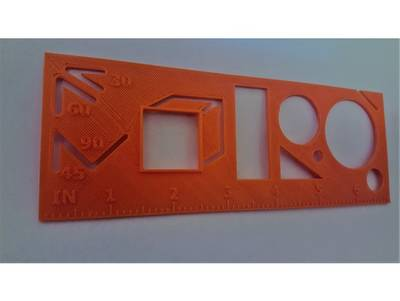
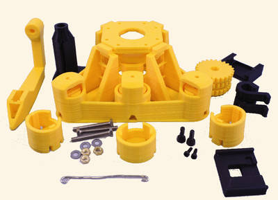

2017-01-26 - Nº 91

Editorial
Esta é a Newsletter Nº 91 que se apresenta com o mesmo formato que as anteriores. Se gostar da Newsletter partilhe-a!
Todas as Newsletters encontram-se indexadas no link.
Esta Newsletter tem os seguintes tópicos:
Faz hoje anos que nascia a 1911, Polykarp Kusch. Este físico Germano-Americano, foi responsável pela determinação de que do momento magnético do electrão é maior que o seu valor teórico, levando assim a inovações no campo da electrodinâmica quântica. Esta semana foi apresentado um concorrente do Raspberry Pi - o Asus Tinker Board. Trata-se de uma placa muito semelhante em termos de formato com o Raspberry Pi, sendo que tem um Arm Cortex A17 com 4 cores a correr a 1.8GHz, ARM Mali-T764 GPU, e 2GB de memória DDR3. Esta geração de ARM apenas corre instruções de 32 bits ao contrario do Raspberry Pi 3, no entanto a GPU é superior à do Raspberry PI. Tem também interface Ethernet a Gigabit e Wifi com possibilidade de ligação de antenas exteriores. A Samsung finalmente apresentou os resultados de um estudo que efectuou para determinar qual o problema que levava a que os Galaxy Note7 se incendiassem e que levou a que tivesse que fazer uma recolha massiva dos equipamentos com prejuízos de largos milhoes de euros. As conclusões apontam para deficiencias na construção e isolamento das baterias que equipavam estes equipamentos.
Na Newsletter desta semana apresentamos diversos projetos de maker assim como alguns modelos 3D que poderão ser úteis. É apresentado também um livro sobre gestão do ciclo de vida de aplicações em contentores Docker com ferramentas Microsoft. Saiu a revista MagPI 54.
 João Alves ([email protected])
João Alves ([email protected])
O conteúdo da Newsletter encontra-se sob a licença  Creative Commons Attribution-NonCommercial-ShareAlike 4.0 International License.
Creative Commons Attribution-NonCommercial-ShareAlike 4.0 International License.
Novidades da Semana ^
Asus takes on Raspberry Pi with 4K-capable Tinker Board
"Tech giant Asus is taking on the Raspberry Pi with its own DIY-friendly single-board computer that's said to offer 4K video playback and 24-bit audio support in exchange for a hefty £55 price tag. Dubbed the "Asus 90MB0QY1-M0EAY0 Tinker Board," or (thankfully) the "Tinker Board" for short, the 8.5cm by 5.3cm computer features a quad-core Arm Cortex A17 CPU running at 1.8GHz, ARM Mali-T764 GPU, and 2GB of DDR3 memory. The most recent revision of the Raspberry Pi, the Raspberry Pi 3 Model B, sports a 64-bit Cortex A53 quad-core processor. The A17 in the Tinker Board only supports 32-bit instructions. However, the Mali-T764 GPU inside the Tinker Board is more powerful than the Broadcom VideoCore IV inside the Pi 3. There's hardware support for H.265 4K decoding instead of just 1080p, and Asus claims it pulls in almost double the benchmark score in Geekbench, which should equate to better 3D performance. Other niceties include gigabit Ethernet, support for SDIO 3.0, and swappable antennas for the built-in 802.11 b/g/n Wi-Fi module. Both single-board computers are almost exactly the same size, and at first glance it appears that the GPIO pins and mounting holes are in the same positions, suggesting the Tinker Board wants to be a drop-in replacement for the Raspberry Pi." [...]
Samsung Announces Cause of Galaxy Note7 Incidents in Press Conference
"Following several months of in-depth investigations, Samsung Electronics today announced the cause of the Note7 incidents and measures to prevent a recurrence during a press conference held in Seoul, Korea. DJ Koh, President of Mobile Communications Business, Samsung Electronics, shared detailed results of the investigation and expressed his sincere apology and gratitude to Galaxy Note7 customers, mobile operators, retail and distribution partners and business partners for their patience and continued support. Koh was joined by executives from UL, Exponent and TUV Rheinland, leading independent industry groups that conducted their own investigation into various aspects of the Galaxy Note7 incidents." [...]
Outras Notícias
- A private chinese space company just scored a foreign contract for the first time
- NOAA’s GOES-16 satellite sends first images of Earth
- Boom completes wind tunnel testing, paving the way for supersonic airplane construction
- Wine 2.0 Released
- ZTE Achieves Performance Breakthrough for Deep Learning with Intel FPGAs
Ciência e Tecnologia ^
New, Old Science Combine to Make Faster Medical Test
"A UCF researcher has combined cutting-edge nanoscience with a magnetic phenomenon discovered more than 170 years ago to create a method for speedy medical tests. The discovery, if commercialized, could lead to faster test results for HIV, Lyme disease, syphilis, rotavirus and other infectious conditions. “I see no reason why a variation of this technique couldn’t be in every hospital throughout the world,” said Shawn Putnam, an assistant professor in the University of Central Florida’s College of Engineering & Computer Science." [...]
Faster websites with fewer bugs
"Today, loading a web page on a big website usually involves a database query — to retrieve the latest contributions to a discussion you’re participating in, a list of news stories related to the one you’re reading, links targeted to your geographic location, or the like. But database queries are time consuming, so many websites store — or “cache” — the results of common queries on web servers for faster delivery. If a site user changes a value in the database, however, the cache needs to be updated, too. The complex task of analyzing a website’s code to identify which operations necessitate updates to which cached values generally falls to the web programmer. Missing one such operation can result in an unusable site. This week, at the Association for Computing Machinery’s Symposium on Principles of Programming Languages, researchers from MIT’s Computer Science and Artificial Intelligence Laboratory presented a new system that automatically handles caching of database queries for web applications written in the web-programming language Ur/Web." [...]
Melting solid below the freezing point
"Phase transitions surround us—for instance, liquid water changes to ice when frozen and to steam when boiled. Now, researchers at the Carnegie Institution for Science* have discovered a new phenomenon of so-called metastability in a liquid phase. A metastable liquid is not quite stable. This state is common in supercooled liquids, which are liquids that cool below the freezing point without turning into a solid or a crystal. Now, scientists report the first experimental evidence of creating a metastable liquid directly by the opposite approach: melting a high-pressure solid crystal of the metal bismuth via a decompression process below its melting point. The results, reported in the January 23, 2017, issue of Nature Communications, could be important for developing new materials and for understanding the dynamics of planetary interiors, such as earthquakes, because a metastable liquid could act as a lubricant strongly affecting the dynamics of the Earth’s interior." [...]
UMass researcher says all-natural 'wire' discovery could replace man-made electronic connectors
"Microbiologists at the University of Massachusetts have discovered a new type of natural wire that could replace traditional wires in the sensors in cellphones and other electronics. Instead of man-made electronics, researchers here have found they can develop sustainable "green" conducting materials for the electronics industry. The study by UMass microbiologist Derek Lovley and colleagues appears this week in mBio, the American Society of Microbiology's premier journal. Lovley said he's really excited by the discovery and sees it as "revolutionary" for the electronics industry. Microbial nanowires are natural, unlike the toxic chemicals used in wires manufactured now that require enormous amounts of energy to produce and also contribute to the build-up of electronic waste in landfills, he said." [...]

Spanish scientists create a 3D bioprinter to print human skin
"Scientists from the Universidad Carlos III de Madrid (UC3M), CIEMAT (Center for Energy, Environmental and Technological Research), Hospital General Universitario Gregorio Marañón, in collaboration with the firm BioDan Group, have presented a prototype for a 3D bioprinter that can create totally functional human skin. This skin is adequate for transplanting to patients or for use in research or the testing of cosmetic, chemical, and pharmaceutical products. This research has recently been published in the electronic version of the scientific journal Biofabrication. In this article, the team of researchers has demonstrated, for the first time, that, using the new 3D printing technology, it is possible to produce proper human skin. One of the authors, José Luis Jorcano, professor in UC3M’s department of Bioengineering and Aerospace Engineering and head of the Mixed Unit CIEMAT/UC3M in Biomedical Engineering, points out that this skin “can be transplanted to patients or used in business settings to test chemical products, cosmetics or pharmaceutical products in quantities and with timetables and prices that are compatible with these uses.”" [...]
Making A.I. Systems that See the World as Humans Do
"A Northwestern University team developed a new computational model that performs at human levels on a standard intelligence test. This work is an important step toward making artificial intelligence systems that see and understand the world as humans do. “The model performs in the 75th percentile for American adults, making it better than average,” said Northwestern Engineering’s Ken Forbus. “The problems that are hard for people are also hard for the model, providing additional evidence that its operation is capturing some important properties of human cognition.” The new computational model is built on CogSketch, an artificial intelligence platform previously developed in Forbus’ laboratory. The platform has the ability to solve visual problems and understand sketches in order to give immediate, interactive feedback. CogSketch also incorporates a computational model of analogy, based on Northwestern psychology professor Dedre Gentner’s structure-mapping theory. (Gentner received the 2016 David E. Rumelhart Prize for her work on this theory.)" [...]
Microbiologists Make Big Leap in Developing ‘Green’ Electronics
"Microbiologists at the University of Massachusetts Amherst report that they have discovered a new type of natural wire produced by bacteria that could greatly accelerate the researchers’ goal of developing sustainable “green” conducting materials for the electronics industry. The study by Derek Lovley and colleagues appears this week in mBio, the American Society of Microbiology’s premier journal. The researchers studied microbial nanowires, protein filaments that bacteria use naturally to make electrical connections with other microbes or minerals. As Lovley explains, “Microbial nanowires are a revolutionary electronic material with substantial advantages over man-made materials. Chemically synthesizing nanowires in the lab requires toxic chemicals, high temperatures and/or expensive metals. The energy requirements are enormous. By contrast, natural microbial nanowires can be mass-produced at room temperature from inexpensive renewable feedstocks in bioreactors with much lower energy inputs. And the final product is free of toxic components.” " [...]
Researchers build carbon nanotube transistors that outperform those made with silicon
"A team of researchers at Peking University has built a carbon nanotube-based working transistor and report that it outperformed larger transistors made with silicon. In their paper published in the journal Science, the team describes how they built the transistor, how it performed and the challenges that still remain before such transistors can be mass produced. Everyone in the computer business knows the limit to which silicon-based transistors can be made smaller is drawing ever closer, so many teams around the world are searching for a suitable replacement. One of the most promising candidates is carbon nanotubes—due to their unique properties, transistors based on them could be smaller, faster and more efficient. Unfortunately, the difficulty in growing carbon nanotubes and their sometimes persnickety nature means that a way to make them and mass produce them has not been found. In this new effort, the researchers report on a method of creating carbon nanotube transistors that are suitable for testing, but not mass production. To create the transistors, the researchers took a novel approach—instead of growing carbon nanotubes that had certain desired properties, they grew some and put them randomly on a silicon surface and then added electronics that would work with the properties they had—clearly not a strategy that would work for mass production, but one that allowed for building a carbon nanotube transistor that could be tested to see if it would verify theories about its performance. Realizing there would still be scaling problems using traditional electrodes, the researchers built a new kind by etching very tiny sheets of graphene. The result was a very tiny transistor, the team reports, capable of moving more current than a standard CMOS transistor using just half of the normal amount of voltage. It was also faster due to a much shorter switch delay, courtesy of the intrinsic delay of just 70 femtoseconds." [...]
Modelos 3D ^
Com a disponibilidade de ferramentas que permitem dar azo a nossa imaginação na criação de peças 3D e espaços como o thingiverse para as publicar, esta rubrica apresenta alguns modelos selecionados que poderão ser úteis.

Customizable Stencil Ruler
"This customizable stencil ruler can be edited to your needs. Utilizing customizer, pick,place, and change the sizes of each stencil. Choose from circles,triangles,rectangles, octagons,hexagons, angle stencils, cube stencils, and more! Additionally, emboss your name or favorite phrase to fully make your own personal stencil. Even adjust the outer dimensions of the ruler to make it perfect for art, school work, on-the-go doodles, or do it yourself projects." [...]
Adjustable Wall Mount Tool Holder (Pliers, Tweezers, Cutters etc)
"Simple tool rack to place on the wall at your bench. Adjust the thickness setting to beef it up. Print it with 100% infill as its a bit fragile in its current state." [...]
Parametric Peristaltic Pump
"This is a peristaltic pump design adapted from emmett's Planetary Gear Bearing. It prints as a single piece, with captive rollers and no rotary wear surfaces. The only non-printed part is the tubing itself. This is a proof-of-concept and can be driven (out of the box) with a standard nut driver bit. For real applications, you probably want to add a mounting feature for a small electric motor or similar. The pre-baked STL file is for typical 3/16 inch OD latex surgical tubing; for other tubing or to adjust other parameters, use the OpenSCAD file and customize as needed." [...]
Documentação ^
A documentação é parte essencial do processo de aprendizagem e a Internet além de artigos interessantes de explorar também tem alguma documentação em formato PDF interessante de ler. Todos os links aqui apresentados são para conteúdo disponibilizado livremente pelo editor do livro.
[Containerized Docker Application Lifecycle with Microsoft Tools and Platform](http://download.microsoft.com/download/7/6/8/768E8E11-1C4B-4C5C-9211-96918C324722/Containerized%20Docker%20Application%20Lifecycle%20with%20Microsoft%20Platform%20and%20Tools%20(eBook)
"Enterprises are increasingly adopting containers. The enterprise is realizing the benefits of cost savings, solution to deployment problems, and DevOps and production operations improvements that containers provide. Over the last years, Microsoft has been rapidly releasing container innovations to the Windows and Linux ecosystems – partnering with industry leaders like Docker and Mesosphere to deliver container solutions that help companies build and deploy applications at cloud speed and scale, whatever their choice of platform or tools. Building containerized applications in an enterprise environment means more than just developing and running applications in containers. It means that you need to have an end-to-end lifecycle so you are capable of delivering applications through Continuous Integration, Testing, Continuous Deployment to containers, and release management supporting multiple environments, while having solid production management and monitoring systems. Within the DevOps context, containers enable continuity in the CI/CD model as they create a clear boundary between developers by providing containerized apps with all the required environment configuration, and ITOps that builds a generic environment to run app specific content. This is all enabled through Microsoft tools and services for containerized Docker applications." [[...]](http://download.microsoft.com/download/7/6/8/768E8E11-1C4B-4C5C-9211-96918C324722/Containerized%20Docker%20Application%20Lifecycle%20with%20Microsoft%20Platform%20and%20Tools%20(eBook)
The MagPI 54
"Make your own Magic Mirror in our step-by-step guide in the latest issue of the official Raspberry Pi magazine. Build a Magic Mirror! - Our definitive guide to build your very own wonder of IoT and design; Object-oriented programming - Follow up from last month’s beginners guide to programming with our OOP guide; Raspberry Pi is 5! - Come celebrate the Raspberry Pis fifth birthday this March; Make a night vision nature watcher - Create your own NatureBytes that can even take photos at night; And much, much more!" [...]
Projetos Maker ^
Diversos Projetos interessantes.
Latching Relay Module
"In electronics, a device is said to be a latching device if it maintains any particular fixed state even after removal of the input signal. The same also applies for electronic/electromechanical relays. Basically the electromechanical relays that are used today are of two types: 1. Non-Latching Relay : These relays are most widely used where energy consumption is basically not an issue.This type relay(s) comes back to its original state once the input signal is removed; 2. Latching Relay : These relays are mostly used in automobiles and are rarely used for basic prototyping needs. Most of the relays which we use today are monostable relays, that means it has only one stable state and so it is called non-latching relays. You must have heard about N.O (Normally Open) and N.C (Normally Closed) terminals of a basic electromechanical relay. However these terminals which are present over the relay show that the electronic relay which we are using has only one stable state." [...]
Enigma QR Clock
"A QR generation library was ported to the Arduino UNO and Seeed LCD touchscreen platform. Originally the generation time was 6 seconds, making the display of seconds impossible. As @ch00ftech suggested, eliminating the search for the optimal QR mask and instead applying a fixed mask, drops the generation time to less than one second. Using a fast TFT display library by @Xark allows seconds to be displayed. This library was modified to comply with the calling convention for @seeedstudio libraries, making it a drop in replacement in an existing sketch. By changing a compiler directive, this library can also control an @adafruit LCD. As a further optimization, the last QR code generated is stored in a bitmap so only the pixels that change are painted." [...]

OpenFlexure Microscope
"A 3D Printable microscope and translation stage. The trick of making a microscope out of a webcam has been around for a little while, and produces good results. However, getting a nice mechanical stage to focus the microscope and move around on the sample is tricky. This project is a 3D printable design that enables very fine (sub-micron) mechanical positioning of the sample and the lens, with surprisingly good mechanical stability. It's discussed in a paper in Review of Scientific Instruments (open access)." [...]
PWM Power Regulator
"In order to synthesize chlorates and perchlorates in the home lab it is always good to have a way to regulate the current flowing through the electrolyte. Because the load is purely resistive the simplest solution is a small PWM (Pulse Width Modulation) regulator. So I decided to make my own." [...]
Wifi Controlled Robot using Raspberry Pi
"This tutorial will show you to develop a python based wireless robot which can be controlled from anywhere around the world using Wifi. About Raspberry Pi. This tiny computer is a precious tool for students, artists, and of course hobbyists and hackers. With features for developing things in different areas, it is not a surprise to have hundreds of thousands if not millions of users." [...]
Pool House Heater Controller
"This project started as a way to prevent my pool pump/filter outdoor cupboard from freezing in the winter. I already realized that a 60w lightbulb should be enough heat in such a small volume (2 cubic metres approx), but I wanted a way to control the heating so nothing would melt either ! This is an easy job for an Arduino UNO and a temperature sensor, but I wanted a single easy to use box without any separate power supplies etc." [...]
DIY Aquarium Controller
"In this instructable I wanted to show you how to make the aquarium controller. There are many controllers available in the Internet, but they cost at least $100. My controller costed about $15. Another great thing about making your own aquarium controller is that you can personalize it. Alright, but why do I need it? Aquarium controller is a huge help for every aquarium owner. It can control leds (turn it slowly on and off at a given time), measure the water temperature (and turn on the alarm if the temperature is too low or too high), feed your fish, monitor the water level, check the pH of water, etc. It can control everything that you have to control in your aquarium and measure every parameter that is relevant for you, your fish and plants. OK, you know why you need it, now let's see how to make it." [...]
Automatic Irrigation System For Indoor Gardening Using Arduino
"In this project i will be demonstrating Automatic Irrigation System with integrated temperature sensor which irrigates or waters your plants automatically. This system is best suited for drip irrigation technique. A Moisture sensor is used to read the Moisture content of the soil. The LM35 Temperature Sensor reads the ambient temperature. This System will help you to irrigate your backyard Garden or your Indoor Garden automatically and you need not worry about watering your favorite plants in your busy schedule. An LCD is provided to monitor the Soil Status, Ambient Temperature and Status of Water supply(Water Pump). Arduino UNO is the brain of this system and all the sensors and display devices are controlled by it. I basically got the Idea of this project from Teacher in my University and could bring the Idea to Reality with the help of these Guys. I am really thankful to them." [...]
Arduino Controlled Game: Pong-Bot Vs Human
"Overview: The Pong-Bot’s job is bouncing ping pong balls into six tumblers as fast as possible. This task is based on Bouncerchallenge from the old TV game show Minute to Win It (although many people say it reminds them of beer pong). A “race function” matches the robot against a human to see who can complete bouncing balls into six tumblers first. Background: I was intrigued by IBM Watson beating Jeopardy champion Ken Jenkins a few years ago. So, while we have robots fighting robots and robots, and interacting with people in some way, I didn't see many robots challenging humans in physical skill games. This motivated a robot to challenge human competitors in a physical skill game (bouncing ping-pong balls). Findings: I'll summarize robot vs. human game outcomes from two Maker Faires in this Instructable, and share some "lessons learned." Technical overview: The robot operates using an Arduino UNO, two servos, a gear motor, and hall effect, optical, and mechanical sensors. An OLED display reports race results. See System Overview and General Operation for details. Also, because this project evolved over time, I'll share some "lessons learned." Project difficulty: Good electrical and mechanical construction skills, along with Arduino IDE experience is required. Estimated cost $300, and construction time of at least a couple of weekends." [...]
Arduino powered bionic arm
"Hi, my name is Frans and in this instructable I will teach you how to create a bionic arm from scratch! Our goal is to create a stable and reliable arm mainframe that is able to move much like a real human arm would! Before we start I will list all the required materials. Please feel free to experiment with different materials or code! Please note that I will not go into making the wooden mount for the arm. I chose not to include that in the steps because my wood working skills are terrible and the point of the arm is that it is modular, which means you could basically hang it anywhere and it will work! Feel free to design a proper mount that is not held together by tyraps." [...]
Ori and the Blind Forest: Shrouded Lantern with RBG LEDs and bluetooth control
"Welcome to my instructable on how to create a simple ornament with RGB LEDs and an Arduino board! In my case I have built a clay-modelled take on Ori and the Blind Forest's Shrouded Lantern because I'm a huge fan and thought this would fit the means perfectly. What we will be going over is controlling LED light values using an Arduino board, some process on the clay sculpting I did and programming your Arduino to power/color RGB LEDs to your liking, as well as fading them between colors and using a bluetooth module to regulate this by phone. Aside from the bluetooth functionality, this should be a very easy project to do and can really make for a sweet desktop must-have with just a few 90 cents LEDs. (and an Arduino board if you don't have one, though) Now then, without further ado, let's get started!" [...]
2 Digit Kitchen Timer 00-99 Seconds or 00-99 Minutes
"The projects shown here is a 2 Digit 00-99 Seconds or 00-99 Minutes Countdown kitchen timer based on PIC16F1825 micro-controller. The timer is useful in various applications like Cooking, Sports, Industrial, Sleeping. On board switches provided to set the time and start, a jumper to select the mode 99 Seconds or 99 Minutes. TTL output directly drives the Buzzer." [...]
Marvin Night Light
"One of the projects, which was scheduled some time ago, was the construction of a personalized presence light. For this project I decided to use a wooden base with an Arduino and a figure printed in 3D. First the bases were cut. Due to the low height of the wood it was necessary to cut two pieces, prepare them and to glue it. Two circles were cut into pine wood with approximately 14 cm in diameter, each. The first was cut with a jigsaw, but due to the fact that this was a time consuming process, I decided to cut the second on the table saw and end up with the belt sander. After that, it was necessary to perfect both in order to be without imperfections. The bases were glued with wood glue, clamped and dried for 24 hours. After that time, the sides of both parts were aligned with a router with a flush trim bit. This bit allows you to level out a part using the bearing area as guide. Next, it was necessary to create the cavity to house the electronics and the socket for the figure. To create these cavities was used, again, the router with a straight bit. Finally, I made the finishing touches. Create a profile all around with a ogee bit and varnish with matt wood varnish." [...]
Building an AT2XTKB (AT to XT) keyboard adapter on prototype board
"If you like me you find yourself wanting an AT2XT adapter, you may have also discovered that they are not too easy to buy pre-made." [...]

The Don't-Leave-Home-Without-It Machine
"Spectacles, phone, wallet, watch. Tablet, keys, pocket knife, camera. Multi-tool. USB cable and charger. Extra batteries. Outgoing mail. Coupons, tickets, medication, and makeup. Sunglasses. Contact lens case and solution. That video game you've been meaning to return. A book to read on the subway. Nowadays we've got more stuff than ever, and it seems like we have to carry most of it around with us. We're also more distracted than ever, our attention constantly jumping back and forth between real and virtual space. It's an insidious combination that can lead to lots of wasted time and energy when we find ourselves at the pharmacy without the prescription, at the hotel without the phone charger, or at the airport without the passport. Whatever it is you keep forgetting, this project can help. It combines a selection of parts from littleBits' Premium Kit with a few common pieces of off-the-shelf hardware to create an automatic pick-me-up-and-take-me-with-you machine. Put it on a table by the door, put the stuff you want to remember inside, and turn it on. If you start to go out without pickings up your things, it sounds an alarm to remind you to grab them, and keeps ringing until you do." [...]
ESP8266 WiFi Garage Door Opener from any Web Browser
"The 'brain' is the ESP8266 uC. It is available with on board WiFi and plenty of I/O for smaller projects. All this for well under $10USD with programming options for NodeMCU, MicroPython, and the Arduino IDE. There seems to be an unstoppable drive in the hacker DIY community for web based garage door openers and we were compelled to respond. The garage door opener we have opens/shuts from a push button switch that basically creates a short to connect two terminals on the garage door opening unit. That allows easy implementation because all that is required is a ESP8266 controlled relay wired across those two terminals to create a switch closure. In addition to activating the door any activity is logged to a Google Sheet via the IFTTT.com Maker Channel. This is handy to track all activation usage and ESP8266 server restarts. The main components are the ESP8266, a relay module, a BS170 N-Channel MOSFET." [...]
A high current power supply built around a server voltage regulator
"Regular readers of this blog will have already seen the article that I published about 4 months ago where I attempted to reverse engineer a voltage regulator module originally designed to fit into a Dell server. The theory was that these would be high quality, stable and robust designs that could prove useful if I could figure out how they worked. They’re certainly worth far more than the few pounds that you can get them for on ebay today. I was able to determine the function of the key pins on the module myself by experimentation and then with some help from eagle-eyed readers out there on the internet we were able to identify the module as an Artesyn NXA66 and subsequently a summary datasheet was located that provided the full pinout." [...]
An open source Rain Sensor and controller
"One major issue when dealing with sprinkler controllers is rain starting to pour during sequences execution, because in this case it is useless – if not damaging – to water a garden or plants while nature is already taking care of that; not to mention that pouring additional water on soil that has already been hit by pouring rain may lead to collapse of drainage canals or ditches, manholes or catch basins, besides causing garden or courtyard floods. Another issue is water stagnation once the rain stops pouring, because this is another instance where garden watering is of no use, since there already is a surplus of water. In order to bypass said obstacles, a sprinkler controller worthy of its name must include a sensor capable of detecting pouring rain and water on the ground beside being obviously able to handle signal coming from said sensor and consequently stop or delay execution of irrigation sequences; this latter aspect is assigned to programming and is currently taken into account in sprinkler controllers, which have a dedicated input, typically a clean-contact or resistive input with pull-up. Once input is activated, the controller executes expected action, skipping the cycle or just putting it on hold for a period of time believed to be sufficient (e.g. a couple of hours) for water to run out; said period of time must start from sensor deactivation, that is when water presence is no longer detected." [...]
Morse Code USB Keyboard Mk II
"I'm now going to eat my words from when I made my first USB Morse code key. I said that using a microcontroller was overkill. The usb-serial cable worked well enough, but it had a couple of major problems: inconvenience and total lack of portability. Can you believe that the cheap cable required a driver to work on windows? And always having to run a python script couldn't be less convenient, not to mention it took up 10%-ish of your CPU when left running in the background. I used it for a while, but when I got a new laptop I just couldn't be bothered to set it up again. I'd been wanting to make something with USB for a while anyway. I spent a few hours reading through the USB specification but I just couldn't cope. I was planning on bit-banging it in assembler. Finally I gave up, bit the bullet, and used the V-USB library. This, once I finally got it to compile, was shockingly easy to use. The disappointing part is I still don't really understand USB at all." [...]

PID Temperature Controlled Oven
"With this instructable, we will take a cheap toaster oven and turn it into an accurate, temperature controlled tempering oven that will be able to achieve a stable and accurate temperature controlled by a microprocessor. We will combine some common and off-the-shelf components to easily and safely achieve this goal. Why do we want to do this? After heat treating steel, it's in a very hard and brittle state. So we can use it with less risk of it snapping, we want to temper it. Tempering will slightly soften steel, but more importantly will restore flexibility to it. Most steel manufacturers specify particular temperatures to temper steel at so you can achieve a given hardness rating. Having the temperature accurate to a fraction of a degree isn't critical for tempering, but I want more accuracy and repeatability than the simple bimetallic strip thermostat that most inexpensive ovens use. ±10°C could easily be a difference of 1-2 Rockwell C points in hardness." [...]
Arduino Mini 2.4GHz and IR Remote Control System
"This is my DIY remote control system. It was designed during the last couple of months. It's based on an Atmega 328P MCU and NRF24L01+ radio modules. The software and board CAD data are available on my GitHub repo: https://github.com/TheDIYGuy999 Lots of videos are available on my YouTube channel: https://www.youtube.com/user/TheDIYGuy999 If you want to build your own remote, just upload the EAGLE .brd file on https://oshpark.com and exactly the same boards as mine will be delivered to you in a couple of weeks. Of course, you can also use a standard Arduino board and wire it up in accordance with the schematic on GitHub." [...]
Light following bristle bot
"There is one thing missing from all my projects so far…..Something that moves. Bristle bots are very similar to hex bugs but are built from toothbrush heads and pager motors. I thought the idea of bristle bots was cool but they were no brains to them until i seen this blog post where you could control one with a light. Essentially this light following bristle bot is just two bristle bots side by side so it would be steered. Lets have a look at the hardware side of the build. Here is a bread board layout below. As you can see its just 2 bristle bots where the pager motor is controlled by a 2N7000 transistor which its speed is determined by the LDR (Light Dependent Resistors) and adjusted with a resistor trim pot. I also added a led to each one to show which pager motor is being activated, This makes it easier to see whats going on too." [...]
Build a cheap and easy IR detector and motor driver for SUMO ROBOT
"Here you can learn Step-by-Step how to build a motor driver Infra-red controlled with only two transistors ! " [...]
Automated windows shades
"I've seen a lot of tutorials on how to automate manual shades and blinds, well in this one we'll automate electric shades. We'll cover electric shades ran by continuous current (DC) electric motors that open or close by reversing the polarity of the current. Although if you buy electric shades you'll get some automation there are reason for doing the automation on your own like: * you may have only a switch near them for up/down control; * it's cheaper (some companies offer advanced automation for a lot of extra $$); * even cheaper if you buy the electric shades kit from ebay and assemble them your self (a single shade kit is around 50$); * more flexible, you can program them do open or close on various circumstances, we'll learn about making a webserver in python that will connect to the shades bluetooth interface, and expose an API to control the shades, we'll also be integrating it with thingspeak and there you could do things like control the shades on a time schedule or control it via sensor input. This will be an intermediate tutorial, you'll need skills like soldering, arduino programming, basic electronic understanding, and some how to install services on a server, running and configuring them." [...]
Ping Pong Ball Juggling Robot
"This entry is about the quest to get a machine to juggle a ping pong ball. I started thinking about a ping pong ball juggler 2 years ago. And it was around that time that I built the first one of them. it uses LED - Photo transistor pairs to "see" when and approximately where the ball comes down. I used 4 micro servos to move a wooden plate. It's the machine in the first YouTube video. The next major update came when I decided it might be interesting to try to track the balls position by using the noise the ball makes when it hits the plate. I installed 4 mics and switched a FlipFlop on as soon as the sound level got over some threshold. The FlipFlop's value then gets read by a micro controller as fast as possible to then compute the time difference between the sound waves hitting the mic on the left in comparison to the mic on the right. The same goes for the front and back mics. This way 2 dimensional data about the ball position is gathered. It worked quite well. The machine on this stage is the one in the second YouTube video." [...]
IoT Santa Tracker on Colorful World Map
"Every year the Christmas Eve Santa Claus sets out on a journey travels around the globe and sends out presents to all the children around the world. But would it be cool to know where the Santa Claus is at that day? MKR1000 Santa Tracker to the rescue! You may already know there are two places where we can get Santa location information, one is from NORAD and one from Google. Although NORAD was the original organization who started the Santa tracking tradition, but Google provides a developer friendly (undocumented) API for the Santa tracking. With this API you will be able to track the real time Santa information including the location, arrival and departure time, presents sent at the location, the same as on the Google's Santa tracking web site. So in this project I chose to use Google Santa data to implement my Santa tracker." [...]
Valentine Blink: Voice Controlled LED Heart
"Valentine week is almost here; it's a perfect time to build something for your special one and what else could be better than blinking LEDs? This write-up is a walk-through in which I'll explain how each component is designed and connected to each other. " [...]
Simple Granular Synth
"This is a basic and easy to build granular synthesizer using the the Arduino UNO." [...]
That's all Folks!